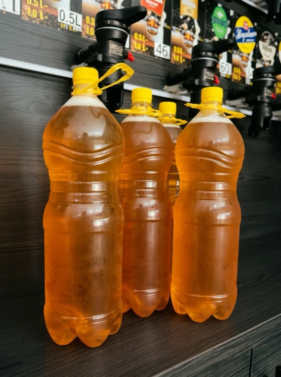

ГИД GYM BEER · КИШИНЁВ
5 правил, как сохранить разливное пиво в ПЭТ свежим
Живое пиво на вынос в ПЭТ 1,5 л сохраняет вкус прямо как из кеги, если соблюдать несколько простых правил хранения и подачи.

1. Храните в холодильнике (2–5 °C) вдали от света
Солнечный свет быстро разрушает хмелевые ароматы, а тепло снижает газацию. Сразу ставьте бутылку в холодильник.
2. Не кладите ПЭТ в морозилку
Резкое замораживание нарушает структуру пены и делает вкус водянистым. Охлаждайте пиво плавно в основной камере.
3. Выпейте в течение 24–48 часов
Живое пиво без консервантов максимально вкусно в первые 1–2 дня в закрытой бутылке и в тот же вечер после открытия.
4. Наливайте в чистый ополоснутый холодной водой бокал
Струя по стенке бокала под углом 45° создаёт плотную пенную шапку, удерживающую аромат.
Краткое сравнение
| Частая ошибка | Последствие | Как правильно |
|---|---|---|
| Оставить в тёплой машине | Теряется газация и свежесть | Сразу в холодильник (2–5 °C) |
| Положить в морозилку | Теряется пена и баланс вкуса | Обычное охлаждение в холодильнике |
| Хранить 5–7 дней | Окисление и потеря аромата | Выпить за 24–48 часов |
Зачем пиво наливают в ПЭТ под давлением?
Беспенный налив под давлением вытесняет кислород из бутылки, сохраняя вкус и газацию настоящего разливного пива.
Где попробовать эти сорта в Кишинёве?
В магазинах GYM BEER на Ботанике (бул. Куза Водэ 1/4) и Буюканах (ул. Алба Юлия 23/2), ежедневно 10:00–22:00.
Другие полезные гиды: Живое нефильтрованное vs фильтрованное пиво · Helles vs Pilsner vs IPA и Weissbier · Как выбрать свежую копчёную рыбу · Крафтовые пивоварни Молдовы: Holz, Beermaster и Götter · При какой температуре подавать каждое пиво